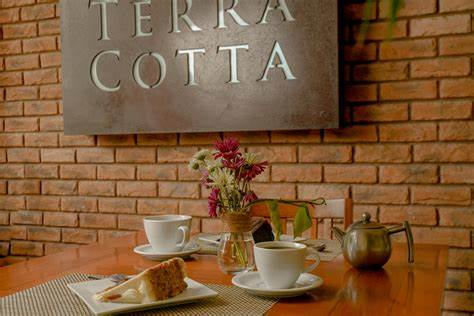

Hola! Viajero
¡Bienvenidos a nuestro rincón dedicado a Huatulco y sus hermosas playas! Aquí encontrarás todo lo que necesitas saber sobre este paraíso en la costa del Pacífico mexicano. Desde sus impresionantes bahías y aguas cristalinas hasta la rica cultura y gastronomía que lo rodean, Huatulco es el destino perfecto para quienes buscan relajarse y disfrutar de la naturaleza. Explora nuestras secciones para descubrir las mejores playas, actividades emocionantes, recomendaciones de hospedaje y consejos útiles para tu visita. Ya sea que busques un día de aventura o simplemente quieras descansar bajo el sol, Huatulco tiene algo especial para cada viajero. ¡Prepárate para vivir una experiencia inolvidable en este mágico destino!
Atrevete Y Visita Huatulco Compra Propiedades


Casa MarinaCasa Marina es un restaurante que fusiona lo mejor del mar y la tierra, ofreciendo una experiencia culinaria única con impresionantes vistas al océano. Nuestro menú destaca frescos mariscos y sabrosos platillos locales, todo elaborado con ingredientes de alta calidad. Ven y disfruta de la esencia de Huatulco en cada bocado. ¡Te esperamos!. Mas Informacion |

TerracotaTerracota es un restaurante que celebra la riqueza de la cocina mexicana, fusionando sabores tradicionales con un toque contemporáneo. En un ambiente acogedor, ofrecemos un menú que destaca ingredientes frescos y locales. Cada platillo, desde tacos artesanales hasta especialidades de temporada, refleja nuestra pasión por la autenticidad y la calidad. Ven a disfrutar de una experiencia culinaria única, donde la comida se convierte en una celebración. ¡Te esperamos en Terracota!. Mas Informacion |

Che DieguitoChe Dieguito es un restaurante de carnes, donde la pasión por la buena comida se une a un ambiente acogedor y auténtico. Nuestro menú destaca cortes selectos, preparados con recetas tradicionales y un toque moderno. Ven a disfrutar de una experiencia gastronómica que rinde homenaje a la cocina italiana, con sabores intensos y frescura en cada plato. Mas Informacion |
|---|